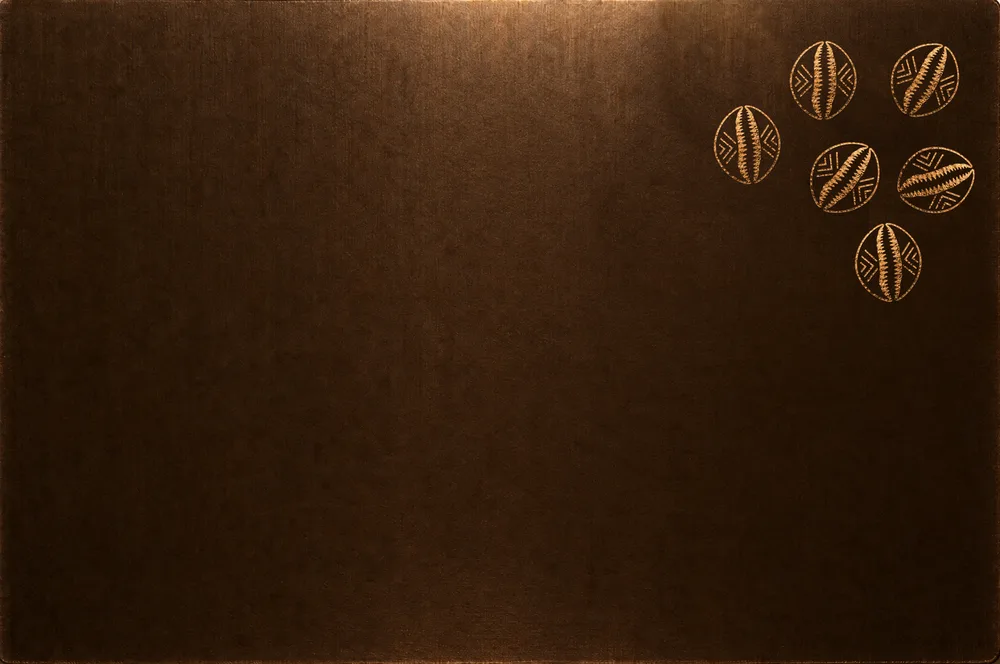
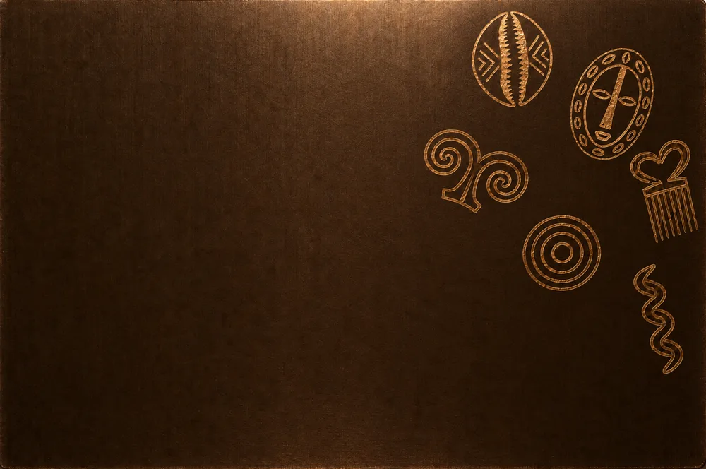

Keewal Meere

- Role
- Product designer and developer: concept, flows, design system, UI, front end
- Client
- Own concept, in progress
- Timeline
- 10 to 25 September 2026 for the prototype · 175 commits · in progress
- Tools
- Figma (card and reference), React, Vite, Playwright audits, Vercel · Claude Code as the build partner
- Team
- Solo
Overview
Keewal Meere is a mobile-first banking and investing app for francophone West Africa and its diaspora: a chequing account with a virtual card, savings with named goals, African equities (BRVM, NGX, JSE, NSE) and crypto in the same account, and exchange across sixteen currencies with the market rate and the margin shown side by side before you confirm.
It is a working prototype in French (Senegal first, Nigerian English second) that runs on demo data and says so. The interface talks to one API contract; a real back-end is an environment variable away.
The problem
Sending money home and investing at home are two different apps, two sets of fees and a lot of fine print. The Dakar demo account holds Sonatel, Dangote Cement, Safaricom and NSIA Banque, because the app is first about buying African stocks, with crypto beside it rather than above it. And it never hides the exchange rate it is charging you.
Who it’s for
People from francophone West Africa living abroad who send money home and would like to invest there too, and who read fees carefully because they have been burned before.
People at home opening an account from a phone, in one of the 34 countries the sign-up serves, who need the onboarding to work with the documents and the connection they have.
Someone judging the product in thirty seconds: the demo is one tap from the welcome screen, with no account.
Constraints
Trust is the product. The design has machine-checked rules: every colour from tokens, contrast at or above 4.5:1 measured on the rendered page, touch targets at least 44px, text at least 12px, a full dark mode, and nothing carried by colour alone. A static check and a browser audit run on every build.
No licence, no custodian, no market feed for the BRVM. The app says so on its own company page, and a configured build removes every demo balance from the shipped bundle, because invented balances have no place in the same file as real ones.
Security in the front end as a bank would expect it: a strict content security policy exercised at every build, self-hosted fonts, a PIN lock after inactivity, secrets never in the client.
Two weeks, alone, for the prototype.
Process
Research and references
I started from what the diaspora stacks together today to send and invest, from how remittance apps and neobanks show or hide their margins, and from a banking design-system kit in the Figma Community for component anatomy, spacing and screen composition. The kit lent structure only; the palette, the typeface and the wordmark are ours, and those two decisions outrank the kit.
For the card I put a metal bank card beside a cowrie print and a sheet of Adinkra symbols and asked for the same feeling. Five renders of an engraved wedge followed, each made with the previous as its reference so the texture stayed.
User flows
Onboarding in seven steps: email, code, identity, address, document, two-factor, PIN. Placing an order: live preview, explicit fees, confirmation sheet; an indivisible asset is priced in whole units because a share does not split on the BRVM. A risk profile at /profil/risque that warns before an order and unlocks nothing, because refusing an adult the use of their own money is a posture, not a protection. Every flow is also walked by a keyboard-only test, at two widths, with no mouse.
Iterations: five design systems in two weeks
The look went through five states, each recorded in the design file. A “minimal nordic fintech” brief with a teal accent and no shadows. Then glass and depth: glassmorphism, three-layer shadows, an ambient ground, a citrine accent, monospace digits. Then full monochrome and Poppins (Futura first). Then brown and gold, from a reference I brought. Then the current state: flat surfaces, no sheen, no blur, no gradient anywhere, only the shadow stack to say that an object floats.
The card went through its own loop. I asked for a real card with real measurements, then composed the front myself in Figma, moved the chip and the name where I wanted them, and sent a screenshot: that screenshot became the brief, and every position in the app is measured from it. The chip I dragged into place landed on the ISO/IEC 7816-2 contact position within a few pixels.
What I designed and built
01 - Onboarding and the demo
Email code sign-in, a seven-step account opening from 34 countries, and a one-tap demo account in Dakar, priced in francs.
02 - Dashboard, market and portfolio
A hero balance with period toggle and return, a market engine with search and filters, asset pages with a candle chart from 1024px, and a multi-currency portfolio (XOF, EUR, NGN) with real conversion between pockets.
03 - Honest exchange and orders
Sixteen currencies with market rate and margin side by side before confirmation; order preview with explicit fees; a risk profile that explains why it asks each question.
04 - The virtual card
A real two-sided card: cowries on brushed metal, the wordmark engraved in the same gold, a chip at the ISO position, the holder’s name alone at the foot, and the numbers on the back.
05 - The design system
Tokens for everything, a components page with every state, light and dark, motion that is cut under reduced motion, and the checks that keep it honest: contrast, targets, keyboard, overflow, content security policy.
Key deliverables
- Positioning and product concept (African equities first)
- Design system: tokens, components, light and dark, machine-checked rules
- Onboarding, order, exchange and risk-profile flows
- Brand: wordmark, monogram, virtual card (Figma file, ISO measurements)
- API contract (68 endpoints) with a reference server, so a back-end can be plugged in
- Keyboard, motion, flows, screenshot and CSP test suites




Outcome
The prototype is live and explorable. The visual system and the first flows are done; the back-end, KYC provider and market feeds are what remain, and the roadmap in the repo says honestly which is which.
TO FILL
Add what people said when you showed them the demo, especially about the exchange screen and the card, and anything you changed because of it.
Next: the rename from the working title to Keewal Meere is done with my own wordmark; the official card network mark and the real legal line on the card’s back wait for a licence that does not exist yet, and the app says so.